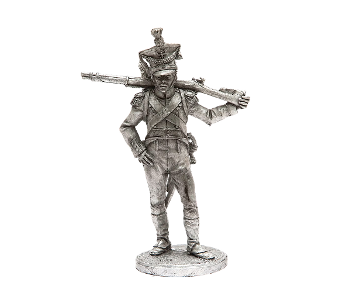
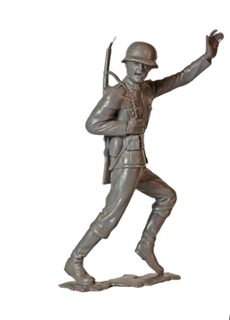
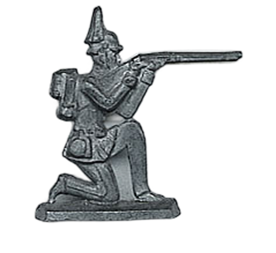

1800-1900 - L'INVENZIONE DELLO STUPORE
SOLDATINI DI PIOMBO
Nel corso dell'Ottocento, nessun altro giocattolo ha saputo catturare l'immaginazione dei ragazzi come i soldatini di piombo. In un secolo segnato da grandi battaglie napoleoniche e dall'espansione degli imperi, queste miniature permettevano ai bambini di diventare generali nel salotto di casa, ricreando la storia o inventando nuove leggende.
DALLA GERMANIA AL MONDO
Sebbene figure militari esistessero fin dall'antichità, la vera rivoluzione avvenne a Norimberga:
- I "Piatti" di Norimberga: Inizialmente, i soldatini erano figure bidimensionali (piatte), incise con incredibile maestria su lastre di ardesia e poi fuse in una lega di stagno e piombo. Erano piccoli capolavori di incisione, dipinti a mano con uniformi meticolose.
- La rivoluzione del "Tutto Tondo": Verso la fine dell'800, grazie a aziende come la francese Mignot o l'inglese Britains, i soldatini divennero tridimensionali.
- Il metodo Britains: William Britain inventò il processo di fusione cava, che rendeva i soldatini più leggeri, economici e resistenti, portandoli finalmente nelle case di milioni di famiglie, non solo di quelle aristocratiche.



NON SOLO GUERRA
- Scene di vita quotidiana: Contadini, animali della fattoria, bande musicali e persino scene di caccia.
- Dettagli realistici: Cannoni funzionanti a molla, tende da campo in tela e fortini in legno che rendevano l'esperienza di gioco un vero diorama storico.
- Parti del corpo: Piccole mani o falli stilizzati (simboli universali di fertilità e protezione contro la sfortuna).

IL GIOCO DEI GRANDI
Il fascino dei soldatini di piombo non colpiva solo i bambini. Grandi personaggi della storia e della letteratura ne erano collezionisti accaniti: H.G. Wells, il celebre autore di La Guerra dei Mondi, era così appassionato da scrivere nel 1913 un libro intitolato "Piccole Guerre", considerato il primo regolamento ufficiale per i giochi di miniature (wargame). Anche Winston Churchill possedeva una collezione di oltre 1.500 pezzi con cui pianificava strategie da ragazzo.
